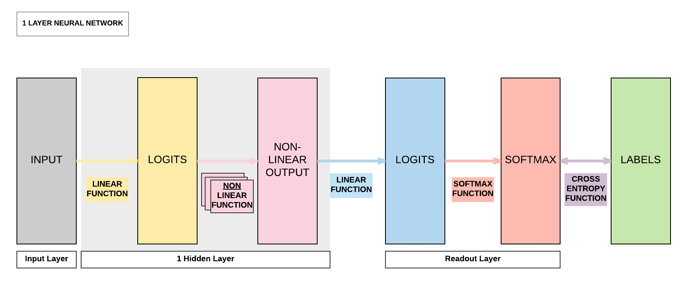

Optimization Algorithms¶
Run Jupyter Notebook
You can run the code for this section in this jupyter notebook link.
Introduction to Gradient-descent Optimizers¶
Model Recap: 1 Hidden Layer Feedforward Neural Network (ReLU Activation)¶

Steps¶
- Step 1: Load Dataset
- Step 2: Make Dataset Iterable
- Step 3: Create Model Class
- Step 4: Instantiate Model Class
- Step 5: Instantiate Loss Class
- Step 6: Instantiate Optimizer Class
- Step 7: Train Model
import torch import torch.nn as nn import torchvision.transforms as transforms import torchvision.datasets as dsets # Set seed torch.manual_seed(0) ''' STEP 1: LOADING DATASET ''' train_dataset = dsets.MNIST(root='./data', train=True, transform=transforms.ToTensor(), download=True) test_dataset = dsets.MNIST(root='./data', train=False, transform=transforms.ToTensor()) ''' STEP 2: MAKING DATASET ITERABLE ''' batch_size = 100 n_iters = 3000 num_epochs = n_iters / (len(train_dataset) / batch_size) num_epochs = int(num_epochs) train_loader = torch.utils.data.DataLoader(dataset=train_dataset, batch_size=batch_size, shuffle=True) test_loader = torch.utils.data.DataLoader(dataset=test_dataset, batch_size=batch_size, shuffle=False) ''' STEP 3: CREATE MODEL CLASS ''' class FeedforwardNeuralNetModel(nn.Module): def __init__(self, input_dim, hidden_dim, output_dim): super(FeedforwardNeuralNetModel, self).__init__() # Linear function self.fc1 = nn.Linear(input_dim, hidden_dim) # Non-linearity self.relu = nn.ReLU() # Linear function (readout) self.fc2 = nn.Linear(hidden_dim, output_dim) def forward(self, x): # Linear function out = self.fc1(x) # Non-linearity out = self.relu(out) # Linear function (readout) out = self.fc2(out) return out ''' STEP 4: INSTANTIATE MODEL CLASS ''' input_dim = 28*28 hidden_dim = 100 output_dim = 10 model = FeedforwardNeuralNetModel(input_dim, hidden_dim, output_dim) ''' STEP 5: INSTANTIATE LOSS CLASS ''' criterion = nn.CrossEntropyLoss() ''' STEP 6: INSTANTIATE OPTIMIZER CLASS ''' learning_rate = 0.1 optimizer = torch.optim.SGD(model.parameters(), lr=learning_rate) ''' STEP 7: TRAIN THE MODEL ''' iter = 0 for epoch in range(num_epochs): for i, (images, labels) in enumerate(train_loader): # Load images as Variable images = images.view(-1, 28*28).requires_grad_() # Clear gradients w.r.t. parameters optimizer.zero_grad() # Forward pass to get output/logits outputs = model(images) # Calculate Loss: softmax --> cross entropy loss loss = criterion(outputs, labels) # Getting gradients w.r.t. parameters loss.backward() # Updating parameters optimizer.step() iter += 1 if iter % 500 == 0: # Calculate Accuracy correct = 0 total = 0 # Iterate through test dataset for images, labels in test_loader: # Load images to a Torch Variable images = images.view(-1, 28*28) # Forward pass only to get logits/output outputs = model(images) # Get predictions from the maximum value _, predicted = torch.max(outputs.data, 1) # Total number of labels total += labels.size(0) # Total correct predictions correct += (predicted == labels).sum() accuracy = 100 * correct / total # Print Loss print('Iteration: {}. Loss: {}. Accuracy: {}'.format(iter, loss.item(), accuracy))
Iteration: 500. Loss: 0.3440718352794647. Accuracy: 91 Iteration: 1000. Loss: 0.2057694047689438. Accuracy: 93 Iteration: 1500. Loss: 0.2646750807762146. Accuracy: 94 Iteration: 2000. Loss: 0.17563636600971222. Accuracy: 94 Iteration: 2500. Loss: 0.1361844837665558. Accuracy: 95 Iteration: 3000. Loss: 0.11089023947715759. Accuracy: 95
Non-Technical Process¶
- Convert inputs/labels to variables
- Clear gradient buffers
- Get output given inputs
- Get loss by comparing with labels
- Get gradients w.r.t. parameters (backpropagation)
- Update parameters using gradients (gradient descent)
parameters = parameters - learning_rate * parameters_gradients
- REPEAT
Why is it called Gradient Descent?¶
- Use gradients (calculated through backpropagation) \rightarrow update parameters to minimize our loss (descent) \rightarrow better predictive accuracy
Mathematical Interpretation of Gradient Descent¶
- Model's parameters: \theta \in ℝ^d
- Loss function: J(\theta)
- Gradient w.r.t. parameters: \nabla J(\theta)
- Learning rate: \eta
- Batch Gradient descent: \theta = \theta - \eta \cdot \nabla J(\theta)
Optimization Algorithm 1: Batch Gradient Descent¶
- What we've covered so far: batch gradient descent
- \theta = \theta - \eta \cdot \nabla J(\theta)
- Characteristics
- Compute the gradient of the lost function w.r.t. parameters for the entire training data, \nabla J(\theta)
- Use this to update our parameters at every iteration
- Problems
- Unable to fit whole datasets in memory
- Computationally slow as we attempt to compute a large gradient matrix \rightarrow first order derivative, \nabla J(\theta)
- Conceptually easy to understand \rightarrow rarely used
Optimization Algorithm 2: Stochastic Gradient Descent¶
- Modification of batch gradient descent
- \theta = \theta - \eta \cdot \nabla J(\theta, x^{i}, y^{i})
- Characteristics
- Compute the gradient of the lost function w.r.t. parameters for the one set of training sample (1 input and 1 label), \nabla J(\theta, x^{i}, y^{i})
- Use this to update our parameters at every iteration
- Benefits
- Able to fit large datasets
- Computationally faster \rightarrow instead gradients w.r.t to the whole training data, we get the gradients w.r.t. training sample
- Problems
- Updating very frequently \rightarrow huge variance in parameter updates \rightarrow may overshoot local minima
- Can be solved by carefully decaying your learning rate \rightarrow take smaller steps in incorporating gradients to improve the parameters
- Updating very frequently \rightarrow huge variance in parameter updates \rightarrow may overshoot local minima
Optimization Algorithm 3: Mini-batch Gradient Descent¶
- Combination of batch gradient descent & stochastic gradient descent
- \theta = \theta - \eta \cdot \nabla J(\theta, x^{i: i+n}, y^{i:i+n})
- Characteristics
- Compute the gradient of the lost function w.r.t. parameters for n sets of training sample (n input and n label), \nabla J(\theta, x^{i: i+n}, y^{i:i+n})
- Use this to update our parameters at every iteration
- Benefits
- Able to fit large datasets
- Computationally faster \rightarrow instead gradients w.r.t to the whole training data, we get the gradients w.r.t. training sample
- Lower variance of parameter updates
- This is often called SGD in deep learning frameworks .__.
import torch import torch.nn as nn import torchvision.transforms as transforms import torchvision.datasets as dsets # Set seed torch.manual_seed(0) ''' STEP 1: LOADING DATASET ''' train_dataset = dsets.MNIST(root='./data', train=True, transform=transforms.ToTensor(), download=True) test_dataset = dsets.MNIST(root='./data', train=False, transform=transforms.ToTensor()) ''' STEP 2: MAKING DATASET ITERABLE ''' batch_size = 100 n_iters = 3000 num_epochs = n_iters / (len(train_dataset) / batch_size) num_epochs = int(num_epochs) train_loader = torch.utils.data.DataLoader(dataset=train_dataset, batch_size=batch_size, shuffle=True) test_loader = torch.utils.data.DataLoader(dataset=test_dataset, batch_size=batch_size, shuffle=False) ''' STEP 3: CREATE MODEL CLASS ''' class FeedforwardNeuralNetModel(nn.Module): def __init__(self, input_dim, hidden_dim, output_dim): super(FeedforwardNeuralNetModel, self).__init__() # Linear function self.fc1 = nn.Linear(input_dim, hidden_dim) # Non-linearity self.relu = nn.ReLU() # Linear function (readout) self.fc2 = nn.Linear(hidden_dim, output_dim) def forward(self, x): # Linear function out = self.fc1(x) # Non-linearity out = self.relu(out) # Linear function (readout) out = self.fc2(out) return out ''' STEP 4: INSTANTIATE MODEL CLASS ''' input_dim = 28*28 hidden_dim = 100 output_dim = 10 model = FeedforwardNeuralNetModel(input_dim, hidden_dim, output_dim) ''' STEP 5: INSTANTIATE LOSS CLASS ''' criterion = nn.CrossEntropyLoss() ''' STEP 6: INSTANTIATE OPTIMIZER CLASS ''' learning_rate = 0.1 optimizer = torch.optim.SGD(model.parameters(), lr=learning_rate) ''' STEP 7: TRAIN THE MODEL ''' iter = 0 for epoch in range(num_epochs): for i, (images, labels) in enumerate(train_loader): # Load images as Variable images = images.view(-1, 28*28).requires_grad_() # Clear gradients w.r.t. parameters optimizer.zero_grad() # Forward pass to get output/logits outputs = model(images) # Calculate Loss: softmax --> cross entropy loss loss = criterion(outputs, labels) # Getting gradients w.r.t. parameters loss.backward() # Updating parameters optimizer.step() iter += 1 if iter % 500 == 0: # Calculate Accuracy correct = 0 total = 0 # Iterate through test dataset for images, labels in test_loader: # Load images to a Torch Variable images = images.view(-1, 28*28).requires_grad_() # Forward pass only to get logits/output outputs = model(images) # Get predictions from the maximum value _, predicted = torch.max(outputs.data, 1) # Total number of labels total += labels.size(0) # Total correct predictions correct += (predicted == labels).sum() accuracy = 100 * correct / total # Print Loss print('Iteration: {}. Loss: {}. Accuracy: {}'.format(iter, loss.item(), accuracy))
Iteration: 500. Loss: 0.3440718352794647. Accuracy: 91 Iteration: 1000. Loss: 0.2057694047689438. Accuracy: 93 Iteration: 1500. Loss: 0.2646750807762146. Accuracy: 94 Iteration: 2000. Loss: 0.17563636600971222. Accuracy: 94 Iteration: 2500. Loss: 0.1361844837665558. Accuracy: 95 Iteration: 3000. Loss: 0.11089023947715759. Accuracy: 95
Optimization Algorithm 4: SGD Momentum¶
- Modification of SGD
- v_t = \gamma v_{t-1} + \eta \cdot \nabla J(\theta, x^{i: i+n}, y^{i:i+n})
- \theta = \theta - v_t
- Characteristics
- Compute the gradient of the lost function w.r.t. parameters for n sets of training sample (n input and n label), \nabla J(\theta, x^{i: i+n}, y^{i:i+n})
- Use this to add to the previous update vector v_{t-1}
- Momentum, usually set to \gamma = 0.9
- Parameters updated with update vector, v_t that incorporates previous update vector
- \gamma v_{t} increases if gradient same sign/direction as v_{t-1}
- Gives SGD the push when it is going in the right direction (minimizing loss)
- Accelerated convergence
- \gamma v_{t} decreases if gradient different sign/direction as v_{t-1}
- Dampens SGD when it is going in a different direction
- Lower variation in loss minimization
- \gamma v_{t} increases if gradient same sign/direction as v_{t-1}
- Problems
- It might go the wrong direction (higher loss) \rightarrow continue to be accelerated to the wrong direction (higher loss)
import torch import torch.nn as nn import torchvision.transforms as transforms import torchvision.datasets as dsets # Set seed torch.manual_seed(0) ''' STEP 1: LOADING DATASET ''' train_dataset = dsets.MNIST(root='./data', train=True, transform=transforms.ToTensor(), download=True) test_dataset = dsets.MNIST(root='./data', train=False, transform=transforms.ToTensor()) ''' STEP 2: MAKING DATASET ITERABLE ''' batch_size = 100 n_iters = 3000 num_epochs = n_iters / (len(train_dataset) / batch_size) num_epochs = int(num_epochs) train_loader = torch.utils.data.DataLoader(dataset=train_dataset, batch_size=batch_size, shuffle=True) test_loader = torch.utils.data.DataLoader(dataset=test_dataset, batch_size=batch_size, shuffle=False) ''' STEP 3: CREATE MODEL CLASS ''' class FeedforwardNeuralNetModel(nn.Module): def __init__(self, input_dim, hidden_dim, output_dim): super(FeedforwardNeuralNetModel, self).__init__() # Linear function self.fc1 = nn.Linear(input_dim, hidden_dim) # Non-linearity self.relu = nn.ReLU() # Linear function (readout) self.fc2 = nn.Linear(hidden_dim, output_dim) def forward(self, x): # Linear function out = self.fc1(x) # Non-linearity out = self.relu(out) # Linear function (readout) out = self.fc2(out) return out ''' STEP 4: INSTANTIATE MODEL CLASS ''' input_dim = 28*28 hidden_dim = 100 output_dim = 10 model = FeedforwardNeuralNetModel(input_dim, hidden_dim, output_dim) ''' STEP 5: INSTANTIATE LOSS CLASS ''' criterion = nn.CrossEntropyLoss() ''' STEP 6: INSTANTIATE OPTIMIZER CLASS ''' learning_rate = 0.1 optimizer = torch.optim.SGD(model.parameters(), lr=learning_rate, momentum=0.9) ''' STEP 7: TRAIN THE MODEL ''' iter = 0 for epoch in range(num_epochs): for i, (images, labels) in enumerate(train_loader): # Load images as Variable images = images.view(-1, 28*28).requires_grad_() # Clear gradients w.r.t. parameters optimizer.zero_grad() # Forward pass to get output/logits outputs = model(images) # Calculate Loss: softmax --> cross entropy loss loss = criterion(outputs, labels) # Getting gradients w.r.t. parameters loss.backward() # Updating parameters optimizer.step() iter += 1 if iter % 500 == 0: # Calculate Accuracy correct = 0 total = 0 # Iterate through test dataset for images, labels in test_loader: # Load images to a Torch Variable images = images.view(-1, 28*28) # Forward pass only to get logits/output outputs = model(images) # Get predictions from the maximum value _, predicted = torch.max(outputs.data, 1) # Total number of labels total += labels.size(0) # Total correct predictions correct += (predicted == labels).sum() accuracy = 100 * correct / total # Print Loss print('Iteration: {}. Loss: {}. Accuracy: {}'.format(iter, loss.item(), accuracy))
Iteration: 500. Loss: 0.16120098531246185. Accuracy: 96 Iteration: 1000. Loss: 0.15727552771568298. Accuracy: 96 Iteration: 1500. Loss: 0.1303034871816635. Accuracy: 96 Iteration: 2000. Loss: 0.022178759798407555. Accuracy: 97 Iteration: 2500. Loss: 0.07027597725391388. Accuracy: 97 Iteration: 3000. Loss: 0.02519878000020981. Accuracy: 97
Optimization Algorithm 4: SGD Nesterov¶
- Modification of SGD Momentum
- v_t = \gamma v_{t-1} + \eta \cdot \nabla J(\theta - \gamma v_{t-1}, x^{i: i+n}, y^{i:i+n})
- \theta = \theta - v_t
- Characteristics
- Compute the gradient of the lost function w.r.t. future approximate parameters for n sets of training sample (n input and n label), \nabla J(\theta - \gamma v_{t-1}, x^{i: i+n}, y^{i:i+n})
- Use this to add to the previous update vector v_{t-1}
- Momentum, usually set to \gamma = 0.9
- Gradients w.r.t. future approximate parameters \rightarrow sense of where we will be \rightarrow anticipate if we are going in the wrong direction in the next step \rightarrow slow down accordingly
- Compute the gradient of the lost function w.r.t. future approximate parameters for n sets of training sample (n input and n label), \nabla J(\theta - \gamma v_{t-1}, x^{i: i+n}, y^{i:i+n})
import torch import torch.nn as nn import torchvision.transforms as transforms import torchvision.datasets as dsets # Set seed torch.manual_seed(0) ''' STEP 1: LOADING DATASET ''' train_dataset = dsets.MNIST(root='./data', train=True, transform=transforms.ToTensor(), download=True) test_dataset = dsets.MNIST(root='./data', train=False, transform=transforms.ToTensor()) ''' STEP 2: MAKING DATASET ITERABLE ''' batch_size = 100 n_iters = 3000 num_epochs = n_iters / (len(train_dataset) / batch_size) num_epochs = int(num_epochs) train_loader = torch.utils.data.DataLoader(dataset=train_dataset, batch_size=batch_size, shuffle=True) test_loader = torch.utils.data.DataLoader(dataset=test_dataset, batch_size=batch_size, shuffle=False) ''' STEP 3: CREATE MODEL CLASS ''' class FeedforwardNeuralNetModel(nn.Module): def __init__(self, input_dim, hidden_dim, output_dim): super(FeedforwardNeuralNetModel, self).__init__() # Linear function self.fc1 = nn.Linear(input_dim, hidden_dim) # Non-linearity self.relu = nn.ReLU() # Linear function (readout) self.fc2 = nn.Linear(hidden_dim, output_dim) def forward(self, x): # Linear function out = self.fc1(x) # Non-linearity out = self.relu(out) # Linear function (readout) out = self.fc2(out) return out ''' STEP 4: INSTANTIATE MODEL CLASS ''' input_dim = 28*28 hidden_dim = 100 output_dim = 10 model = FeedforwardNeuralNetModel(input_dim, hidden_dim, output_dim) ''' STEP 5: INSTANTIATE LOSS CLASS ''' criterion = nn.CrossEntropyLoss() ''' STEP 6: INSTANTIATE OPTIMIZER CLASS ''' learning_rate = 0.1 optimizer = torch.optim.SGD(model.parameters(), lr=learning_rate, momentum=0.9, nesterov=True) ''' STEP 7: TRAIN THE MODEL ''' iter = 0 for epoch in range(num_epochs): for i, (images, labels) in enumerate(train_loader): # Load images as Variable images = images.view(-1, 28*28).requires_grad_() # Clear gradients w.r.t. parameters optimizer.zero_grad() # Forward pass to get output/logits outputs = model(images) # Calculate Loss: softmax --> cross entropy loss loss = criterion(outputs, labels) # Getting gradients w.r.t. parameters loss.backward() # Updating parameters optimizer.step() iter += 1 if iter % 500 == 0: # Calculate Accuracy correct = 0 total = 0 # Iterate through test dataset for images, labels in test_loader: # Load images to a Torch Variable images = images.view(-1, 28*28) # Forward pass only to get logits/output outputs = model(images) # Get predictions from the maximum value _, predicted = torch.max(outputs.data, 1) # Total number of labels total += labels.size(0) # Total correct predictions correct += (predicted == labels).sum() accuracy = 100 * correct / total # Print Loss print('Iteration: {}. Loss: {}. Accuracy: {}'.format(iter, loss.item(), accuracy))
Iteration: 500. Loss: 0.15292978286743164. Accuracy: 96 Iteration: 1000. Loss: 0.11253029108047485. Accuracy: 96 Iteration: 1500. Loss: 0.11986596137285233. Accuracy: 96 Iteration: 2000. Loss: 0.016192540526390076. Accuracy: 97 Iteration: 2500. Loss: 0.06744947284460068. Accuracy: 97 Iteration: 3000. Loss: 0.03692319989204407. Accuracy: 97
Optimization Algorithm 4: Adam¶
- Adaptive Learning Rates
- m_t = \beta_1 m_{t-1} + (1 - \beta_1)g_t
- Keeping track of decaying gradient
- Estimate of the mean of gradients
- v_t = \beta_2 v_{t-1} + (1 - \beta_2)g_t^2
- Keeping track of decaying squared gradient
- Estimate of the variance of gradients
- When m_t, v_t initializes as 0, m_t, v_t \rightarrow 0 initially when decay rates small, \beta_1, \beta_2 \rightarrow 1
- Need to correct this with:
- \hat m_t = \frac{m_t}{1- \beta_1}
- \hat v_t = \frac{v_t}{1- \beta_2}
- \theta_{t+1} = \theta_t - \frac{\eta}{\sqrt{\hat v_t} + \epsilon}\hat m_t
- Default recommended values
- \beta_1 = 0.9
- \beta_2 = 0.999
- \epsilon = 10^{-8}
- m_t = \beta_1 m_{t-1} + (1 - \beta_1)g_t
- Instead of learning rate \rightarrow equations account for estimates of mean/variance of gradients to determine the next learning rate
import torch import torch.nn as nn import torchvision.transforms as transforms import torchvision.datasets as dsets # Set seed torch.manual_seed(0) ''' STEP 1: LOADING DATASET ''' train_dataset = dsets.MNIST(root='./data', train=True, transform=transforms.ToTensor(), download=True) test_dataset = dsets.MNIST(root='./data', train=False, transform=transforms.ToTensor()) ''' STEP 2: MAKING DATASET ITERABLE ''' batch_size = 100 n_iters = 3000 num_epochs = n_iters / (len(train_dataset) / batch_size) num_epochs = int(num_epochs) train_loader = torch.utils.data.DataLoader(dataset=train_dataset, batch_size=batch_size, shuffle=True) test_loader = torch.utils.data.DataLoader(dataset=test_dataset, batch_size=batch_size, shuffle=False) ''' STEP 3: CREATE MODEL CLASS ''' class FeedforwardNeuralNetModel(nn.Module): def __init__(self, input_dim, hidden_dim, output_dim): super(FeedforwardNeuralNetModel, self).__init__() # Linear function self.fc1 = nn.Linear(input_dim, hidden_dim) # Non-linearity self.relu = nn.ReLU() # Linear function (readout) self.fc2 = nn.Linear(hidden_dim, output_dim) def forward(self, x): # Linear function out = self.fc1(x) # Non-linearity out = self.relu(out) # Linear function (readout) out = self.fc2(out) return out ''' STEP 4: INSTANTIATE MODEL CLASS ''' input_dim = 28*28 hidden_dim = 100 output_dim = 10 model = FeedforwardNeuralNetModel(input_dim, hidden_dim, output_dim) ''' STEP 5: INSTANTIATE LOSS CLASS ''' criterion = nn.CrossEntropyLoss() ''' STEP 6: INSTANTIATE OPTIMIZER CLASS ''' # learning_rate = 0.001 optimizer = torch.optim.Adam(model.parameters()) ''' STEP 7: TRAIN THE MODEL ''' iter = 0 for epoch in range(num_epochs): for i, (images, labels) in enumerate(train_loader): # Load images as Variable images = images.view(-1, 28*28).requires_grad_() # Clear gradients w.r.t. parameters optimizer.zero_grad() # Forward pass to get output/logits outputs = model(images) # Calculate Loss: softmax --> cross entropy loss loss = criterion(outputs, labels) # Getting gradients w.r.t. parameters loss.backward() # Updating parameters optimizer.step() iter += 1 if iter % 500 == 0: # Calculate Accuracy correct = 0 total = 0 # Iterate through test dataset for images, labels in test_loader: # Load images to a Torch Variable images = images.view(-1, 28*28) # Forward pass only to get logits/output outputs = model(images) # Get predictions from the maximum value _, predicted = torch.max(outputs.data, 1) # Total number of labels total += labels.size(0) # Total correct predictions correct += (predicted == labels).sum() accuracy = 100 * correct / total # Print Loss print('Iteration: {}. Loss: {}. Accuracy: {}'.format(iter, loss.item(), accuracy))
Iteration: 500. Loss: 0.2703690826892853. Accuracy: 93 Iteration: 1000. Loss: 0.15547044575214386. Accuracy: 95 Iteration: 1500. Loss: 0.17266806960105896. Accuracy: 95 Iteration: 2000. Loss: 0.0865858644247055. Accuracy: 96 Iteration: 2500. Loss: 0.07156120240688324. Accuracy: 96 Iteration: 3000. Loss: 0.04664849117398262. Accuracy: 97
Other Adaptive Algorithms¶
- Other adaptive algorithms (like Adam, adapting learning rates)
- Adagrad
- Adadelta
- Adamax
- RMSProp
Optimization Algorithm 5: Adagrad¶
import torch import torch.nn as nn import torchvision.transforms as transforms import torchvision.datasets as dsets # Set seed torch.manual_seed(0) ''' STEP 1: LOADING DATASET ''' train_dataset = dsets.MNIST(root='./data', train=True, transform=transforms.ToTensor(), download=True) test_dataset = dsets.MNIST(root='./data', train=False, transform=transforms.ToTensor()) ''' STEP 2: MAKING DATASET ITERABLE ''' batch_size = 100 n_iters = 3000 num_epochs = n_iters / (len(train_dataset) / batch_size) num_epochs = int(num_epochs) train_loader = torch.utils.data.DataLoader(dataset=train_dataset, batch_size=batch_size, shuffle=True) test_loader = torch.utils.data.DataLoader(dataset=test_dataset, batch_size=batch_size, shuffle=False) ''' STEP 3: CREATE MODEL CLASS ''' class FeedforwardNeuralNetModel(nn.Module): def __init__(self, input_dim, hidden_dim, output_dim): super(FeedforwardNeuralNetModel, self).__init__() # Linear function self.fc1 = nn.Linear(input_dim, hidden_dim) # Non-linearity self.relu = nn.ReLU() # Linear function (readout) self.fc2 = nn.Linear(hidden_dim, output_dim) def forward(self, x): # Linear function out = self.fc1(x) # Non-linearity out = self.relu(out) # Linear function (readout) out = self.fc2(out) return out ''' STEP 4: INSTANTIATE MODEL CLASS ''' input_dim = 28*28 hidden_dim = 100 output_dim = 10 model = FeedforwardNeuralNetModel(input_dim, hidden_dim, output_dim) ''' STEP 5: INSTANTIATE LOSS CLASS ''' criterion = nn.CrossEntropyLoss() ''' STEP 6: INSTANTIATE OPTIMIZER CLASS ''' # learning_rate = 0.001 optimizer = torch.optim.Adagrad(model.parameters()) ''' STEP 7: TRAIN THE MODEL ''' iter = 0 for epoch in range(num_epochs): for i, (images, labels) in enumerate(train_loader): # Load images as Variable images = images.view(-1, 28*28).requires_grad_() # Clear gradients w.r.t. parameters optimizer.zero_grad() # Forward pass to get output/logits outputs = model(images) # Calculate Loss: softmax --> cross entropy loss loss = criterion(outputs, labels) # Getting gradients w.r.t. parameters loss.backward() # Updating parameters optimizer.step() iter += 1 if iter % 500 == 0: # Calculate Accuracy correct = 0 total = 0 # Iterate through test dataset for images, labels in test_loader: # Load images to a Torch Variable images = images.view(-1, 28*28) # Forward pass only to get logits/output outputs = model(images) # Get predictions from the maximum value _, predicted = torch.max(outputs.data, 1) # Total number of labels total += labels.size(0) # Total correct predictions correct += (predicted == labels).sum() accuracy = 100 * correct / total # Print Loss print('Iteration: {}. Loss: {}. Accuracy: {}'.format(iter, loss.item(), accuracy))
Iteration: 500. Loss: 0.2757369875907898. Accuracy: 92 Iteration: 1000. Loss: 0.1992958039045334. Accuracy: 93 Iteration: 1500. Loss: 0.2227272093296051. Accuracy: 94 Iteration: 2000. Loss: 0.18628711998462677. Accuracy: 94 Iteration: 2500. Loss: 0.1470586657524109. Accuracy: 95 Iteration: 3000. Loss: 0.11748368293046951. Accuracy: 95
Optimization Algorithm 6: Adadelta¶
import torch import torch.nn as nn import torchvision.transforms as transforms import torchvision.datasets as dsets # Set seed torch.manual_seed(0) ''' STEP 1: LOADING DATASET ''' train_dataset = dsets.MNIST(root='./data', train=True, transform=transforms.ToTensor(), download=True) test_dataset = dsets.MNIST(root='./data', train=False, transform=transforms.ToTensor()) ''' STEP 2: MAKING DATASET ITERABLE ''' batch_size = 100 n_iters = 3000 num_epochs = n_iters / (len(train_dataset) / batch_size) num_epochs = int(num_epochs) train_loader = torch.utils.data.DataLoader(dataset=train_dataset, batch_size=batch_size, shuffle=True) test_loader = torch.utils.data.DataLoader(dataset=test_dataset, batch_size=batch_size, shuffle=False) ''' STEP 3: CREATE MODEL CLASS ''' class FeedforwardNeuralNetModel(nn.Module): def __init__(self, input_dim, hidden_dim, output_dim): super(FeedforwardNeuralNetModel, self).__init__() # Linear function self.fc1 = nn.Linear(input_dim, hidden_dim) # Non-linearity self.relu = nn.ReLU() # Linear function (readout) self.fc2 = nn.Linear(hidden_dim, output_dim) def forward(self, x): # Linear function out = self.fc1(x) # Non-linearity out = self.relu(out) # Linear function (readout) out = self.fc2(out) return out ''' STEP 4: INSTANTIATE MODEL CLASS ''' input_dim = 28*28 hidden_dim = 100 output_dim = 10 model = FeedforwardNeuralNetModel(input_dim, hidden_dim, output_dim) ''' STEP 5: INSTANTIATE LOSS CLASS ''' criterion = nn.CrossEntropyLoss() ''' STEP 6: INSTANTIATE OPTIMIZER CLASS ''' # learning_rate = 0.001 optimizer = torch.optim.Adadelta(model.parameters()) ''' STEP 7: TRAIN THE MODEL ''' iter = 0 for epoch in range(num_epochs): for i, (images, labels) in enumerate(train_loader): # Load images as Variable images = images.view(-1, 28*28).requires_grad_() # Clear gradients w.r.t. parameters optimizer.zero_grad() # Forward pass to get output/logits outputs = model(images) # Calculate Loss: softmax --> cross entropy loss loss = criterion(outputs, labels) # Getting gradients w.r.t. parameters loss.backward() # Updating parameters optimizer.step() iter += 1 if iter % 500 == 0: # Calculate Accuracy correct = 0 total = 0 # Iterate through test dataset for images, labels in test_loader: # Load images to a Torch Variable images = Variable(images.view(-1, 28*28)) # Forward pass only to get logits/output outputs = model(images) # Get predictions from the maximum value _, predicted = torch.max(outputs.data, 1) # Total number of labels total += labels.size(0) # Total correct predictions correct += (predicted == labels).sum() accuracy = 100 * correct / total # Print Loss print('Iteration: {}. Loss: {}. Accuracy: {}'.format(iter, loss.data[0], accuracy))
Iteration: 500. Loss: 0.26303035020828247. Accuracy: 93.95 Iteration: 1000. Loss: 0.08731874823570251. Accuracy: 95.83 Iteration: 1500. Loss: 0.11502093076705933. Accuracy: 96.87 Iteration: 2000. Loss: 0.03550947830080986. Accuracy: 97.12 Iteration: 2500. Loss: 0.042649827897548676. Accuracy: 97.54 Iteration: 3000. Loss: 0.03061559610068798. Accuracy: 97.45
Optimization Algorithm 6: Adamax¶
import torch import torch.nn as nn import torchvision.transforms as transforms import torchvision.datasets as dsets # Set seed torch.manual_seed(0) ''' STEP 1: LOADING DATASET ''' train_dataset = dsets.MNIST(root='./data', train=True, transform=transforms.ToTensor(), download=True) test_dataset = dsets.MNIST(root='./data', train=False, transform=transforms.ToTensor()) ''' STEP 2: MAKING DATASET ITERABLE ''' batch_size = 100 n_iters = 3000 num_epochs = n_iters / (len(train_dataset) / batch_size) num_epochs = int(num_epochs) train_loader = torch.utils.data.DataLoader(dataset=train_dataset, batch_size=batch_size, shuffle=True) test_loader = torch.utils.data.DataLoader(dataset=test_dataset, batch_size=batch_size, shuffle=False) ''' STEP 3: CREATE MODEL CLASS ''' class FeedforwardNeuralNetModel(nn.Module): def __init__(self, input_dim, hidden_dim, output_dim): super(FeedforwardNeuralNetModel, self).__init__() # Linear function self.fc1 = nn.Linear(input_dim, hidden_dim) # Non-linearity self.relu = nn.ReLU() # Linear function (readout) self.fc2 = nn.Linear(hidden_dim, output_dim) def forward(self, x): # Linear function out = self.fc1(x) # Non-linearity out = self.relu(out) # Linear function (readout) out = self.fc2(out) return out ''' STEP 4: INSTANTIATE MODEL CLASS ''' input_dim = 28*28 hidden_dim = 100 output_dim = 10 model = FeedforwardNeuralNetModel(input_dim, hidden_dim, output_dim) ''' STEP 5: INSTANTIATE LOSS CLASS ''' criterion = nn.CrossEntropyLoss() ''' STEP 6: INSTANTIATE OPTIMIZER CLASS ''' # learning_rate = 0.001 optimizer = torch.optim.Adamax(model.parameters()) ''' STEP 7: TRAIN THE MODEL ''' iter = 0 for epoch in range(num_epochs): for i, (images, labels) in enumerate(train_loader): # Load images as Variable images = images.view(-1, 28*28).requires_grad_() # Clear gradients w.r.t. parameters optimizer.zero_grad() # Forward pass to get output/logits outputs = model(images) # Calculate Loss: softmax --> cross entropy loss loss = criterion(outputs, labels) # Getting gradients w.r.t. parameters loss.backward() # Updating parameters optimizer.step() iter += 1 if iter % 500 == 0: # Calculate Accuracy correct = 0 total = 0 # Iterate through test dataset for images, labels in test_loader: # Load images to a Torch Variable images = images.view(-1, 28*28) # Forward pass only to get logits/output outputs = model(images) # Get predictions from the maximum value _, predicted = torch.max(outputs.data, 1) # Total number of labels total += labels.size(0) # Total correct predictions correct += (predicted == labels).sum() accuracy = 100 * correct / total # Print Loss print('Iteration: {}. Loss: {}. Accuracy: {}'.format(iter, loss.item(), accuracy))
Iteration: 500. Loss: 0.29930350184440613. Accuracy: 92 Iteration: 1000. Loss: 0.18749120831489563. Accuracy: 93 Iteration: 1500. Loss: 0.21887679398059845. Accuracy: 95 Iteration: 2000. Loss: 0.14390651881694794. Accuracy: 95 Iteration: 2500. Loss: 0.10771607607603073. Accuracy: 96 Iteration: 3000. Loss: 0.0839928686618805. Accuracy: 96
Optimization Algorithm 7: RMSProp¶
import torch import torch.nn as nn import torchvision.transforms as transforms import torchvision.datasets as dsets # Set seed torch.manual_seed(0) ''' STEP 1: LOADING DATASET ''' train_dataset = dsets.MNIST(root='./data', train=True, transform=transforms.ToTensor(), download=True) test_dataset = dsets.MNIST(root='./data', train=False, transform=transforms.ToTensor()) ''' STEP 2: MAKING DATASET ITERABLE ''' batch_size = 100 n_iters = 3000 num_epochs = n_iters / (len(train_dataset) / batch_size) num_epochs = int(num_epochs) train_loader = torch.utils.data.DataLoader(dataset=train_dataset, batch_size=batch_size, shuffle=True) test_loader = torch.utils.data.DataLoader(dataset=test_dataset, batch_size=batch_size, shuffle=False) ''' STEP 3: CREATE MODEL CLASS ''' class FeedforwardNeuralNetModel(nn.Module): def __init__(self, input_dim, hidden_dim, output_dim): super(FeedforwardNeuralNetModel, self).__init__() # Linear function self.fc1 = nn.Linear(input_dim, hidden_dim) # Non-linearity self.relu = nn.ReLU() # Linear function (readout) self.fc2 = nn.Linear(hidden_dim, output_dim) def forward(self, x): # Linear function out = self.fc1(x) # Non-linearity out = self.relu(out) # Linear function (readout) out = self.fc2(out) return out ''' STEP 4: INSTANTIATE MODEL CLASS ''' input_dim = 28*28 hidden_dim = 100 output_dim = 10 model = FeedforwardNeuralNetModel(input_dim, hidden_dim, output_dim) ''' STEP 5: INSTANTIATE LOSS CLASS ''' criterion = nn.CrossEntropyLoss() ''' STEP 6: INSTANTIATE OPTIMIZER CLASS ''' # learning_rate = 0.001 optimizer = torch.optim.RMSprop(model.parameters()) ''' STEP 7: TRAIN THE MODEL ''' iter = 0 for epoch in range(num_epochs): for i, (images, labels) in enumerate(train_loader): # Load images as Variable images = images.view(-1, 28*28).requires_grad_() # Clear gradients w.r.t. parameters optimizer.zero_grad() # Forward pass to get output/logits outputs = model(images) # Calculate Loss: softmax --> cross entropy loss loss = criterion(outputs, labels) # Getting gradients w.r.t. parameters loss.backward() # Updating parameters optimizer.step() iter += 1 if iter % 500 == 0: # Calculate Accuracy correct = 0 total = 0 # Iterate through test dataset for images, labels in test_loader: # Load images to a Torch Variable images = images.view(-1, 28*28).requires_grad_() # Forward pass only to get logits/output outputs = model(images) # Get predictions from the maximum value _, predicted = torch.max(outputs.data, 1) # Total number of labels total += labels.size(0) # Total correct predictions correct += (predicted == labels).sum() accuracy = 100 * correct / total # Print Loss print('Iteration: {}. Loss: {}. Accuracy: {}'.format(iter, loss.item(), accuracy))
Iteration: 500. Loss: 0.25550296902656555. Accuracy: 95 Iteration: 1000. Loss: 0.17357593774795532. Accuracy: 93 Iteration: 1500. Loss: 0.10597744584083557. Accuracy: 96 Iteration: 2000. Loss: 0.03807783126831055. Accuracy: 96 Iteration: 2500. Loss: 0.10654022544622421. Accuracy: 96 Iteration: 3000. Loss: 0.05745543912053108. Accuracy: 96
Summary of Optimization Algorithms Performance¶
- SGD: 95.78%
- SGD Momentum: 97.69%
- SGD Nesterov: 97.58%
- Adam: 97.20%
- Adagrad: 95.51%
- Adadelta: 97.45%
- Adamax: 96.58%
- RMSProp: 97.1%
Performance is not definitive here
I have used a seed to ensure you can reproduce results here. However, if you change the seed number you would realize that the performance of these optimization algorithms would change. A solution is to run each optimization on many seeds and get the average performance. Then you can compare the mean performance across all optimization algorithms.
There are a lot of other factors like how Adam and SGD Momentum may have different ideal starting learning rates and require different learning rate scheduling. But off the hand, SGD and Adam are very robust optimization algorithms that you can rely on.
Subsequently, we will look into more advanced optimization algorithms that are based mainly on SGD and Adam.
Simple Suggestions¶
- Momentum/Nesterov
- Powerful if we control the learning rate schedule
- Adam
- Lazy to control the learning rate schedule
Summary¶
We've learnt...
Success
- Recap of 7 step process
- Step 1: Load Dataset
- Step 2: Make Dataset Iterable
- Step 3: Create Model Class
- Step 4: Instantiate Model Class
- Step 5: Instantiate Loss Class
- Step 6: Instantiate Optimizer Class
- Step 7: Train Model
- Step 6
- Update parameters using gradients
-
parameters = parameters - learning_rate * parameters_gradients
- Gradient descent
- Using gradients (error signals from loss class) to update parameters
- Mathematical interpretation: \theta = \theta - \eta \cdot \nabla J(\theta)
- Optimisation Algorithms
- Batch gradient descent
- Stochastic gradient descent
- Mini-batch gradient descent (SGD)
- SGD + Momentum
- SGD + Nesterov
- Adam
- Other adaptive algorithms: adagrad, adamax, adadelta, RMSProp
- Recommendations
- SGD+M
- SGD+N
- Adam
Citation¶
If you have found these useful in your research, presentations, school work, projects or workshops, feel free to cite using this DOI.